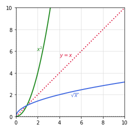

| PolarSPARC |
Introduction to Calculus - Part 5
| Bhaskar S | 04/03/2021 |
Differential Calculus
In Part 4, we covered the topics on relative extrema and exponential functions.
Inverse Functions
If \(f(x)\) and \(g(x)\) are two functions such that the following two conditions are satisfied:
\(f(g(x))\) for every x in the domain of \(g(x)\)
\(g(f(x))\) for every x in the domain of \(f(x)\)
Then, the function \(g(x)\) is said to be the Inverse Function of the function \(f(x)\) and is typically donated as \(f^{-1}(x)\).
An INTERESTING observation - if a point \((a, b)\) lies on the graph of the function \(f(x)\), then the point \((b, a)\) MUST lie on the graph of the inverse function \(f^{-1}(x)\) and vice versa. The graphs of \(f(x)\) and \(f^{-1}(x)\) are reflections of each other along the line \(y = x\).
To determine if a function \(f(x)\) has an inverse function \(f^{-1}(x)\), we must perform a Horizontal Line Test. That is, a function \(f(x)\) has an inverse function \(f^{-1}(x)\) if and only if NO horizontal line intersects the graph of \(f(x)\) at more than one point.
To find the inverse of a given function \(y = f(x)\), just replace \(x\) with \(y\) and \(y\) with \(x\) and then re-arrange the equation for \(y\).
The following diagram provides an illustration of the function \(y = x^2\) in the domain of x \((-\infty, \infty)\) where it fails the horizontal line test:
Let us look at an example now.
| Example-1 | Find the inverse of the function \(y = x^2\), where the domain \(x \geq 0\) |
|---|---|
|
Given \(y = x^2\) in the domain \(x \geq 0\), we see no horizontal line intersects the graph (green line) at more that one point. Hence, the function MUST have an inverse function. To find the inverse function, replace \(x\) with \(y\) and \(y\) with \(x\). That is \(x = y^2\). Then re-arranging for \(y\), we get \(y = \sqrt{x}\). The following diagram provides an illustration of the two functions:

Fig.2
RESULT: The inverse of the function \(x^2\) is \(\sqrt{x}\). |
|
Logarithmic Functions
If \(f(x) = a^x\) such that \(a \gt 0\) and \(a \neq 1\), then \(f^{-1}(x) = log_a x\) is the inverse function of \(f(x)\). Mathematically, it is referred to as the Logarithmic Function of \(x\) with the base \(a\).
In other words, if \(f(x) = y = a^x\), then the inverse function is \(f^{-1}(x) = x = a^y\). That is, \(x = a^y\) can be written as \(y = log_a x\), which is in the logarithmic form.
In general, the logarithm to the base of \(a\) of a number \(x\) is the exponent \(y\). As an example, \(log_2 32 = 5\) OR \(2^5 = 32\).
Given the exponential function \(y = a^x\), the inverse is the Natural Logarithmic Function represented as \(log_e x = \ln{x}\), where the base is the natural irrational number \(e\) and the domain \(x \gt 0\).
The following diagram provides an illustration of the functions \(y = e^x\) and its inverse \(\ln{x}\) in the domain where \(x \gt 0\):
Properties of Logarithms
If the base \(a \gt 0\), \(a \neq 1\), n be real number, u and v be real positive numbers, then following are some of the properties of logarithms
\(log_a 1 = 0 \Rightarrow a^0 = 1\)
\(\ln 1 = 0 \Rightarrow e^0 = 1\)
\(log_a a = 1 \Rightarrow a^1 = a\)
\(\ln e = 1 \Rightarrow e^1 = e\)
\(log_a a^x = x \Rightarrow a^{log_a x} = x\)
\(\ln e^x = x \Rightarrow e^{\ln x} = x\)
If \(log_a x = log_a y\), then x = y
If \(\ln x = \ln y\), then x = y
\(log_a(uv) = log_a u + log_a v\)
\(\ln(uv) = \ln u + \ln v\)
\(log_a \Large{\frac{u}{v}}\)\( = log_a u - log_a v\)
\(\ln \Large{\frac{u}{v}}\)\( = \ln u - \ln v\)
\(log_a u^n = nlog_a u\)
\(\ln u^n = n\ln u\)
Let us look at an example now.
| Example-2 | If P dollars are deposited in an account whose annual interest rate is r and compounded continuously. How long will it take for the balance to double ? |
|---|---|
|
The balance A on investing principal P for a time t at the annual rate r compounded continuously is given by the formula: \(A = Pe^{rt}\). Double the investment on P implies \(A = 2P\). That is, \(2P = Pe^{rt}\). Simplifying, \(e^{rt} = 2\). That is, \(\ln{e^{rt}} = \ln{2}\). From the rules of logarithms, we know \(\ln{e^x} = x\). Therefore, \(rt = \ln{2}\). Or, \(t =\)\(\Large{\frac{1}{r}}\)\(\ln{2}\) RESULT: It takes \(t =\)\(\Large{\frac{1}{r}}\)\(\ln{2}\) for the balance to double at the interest rate r. |
|
Derivatives of Logarithmic Functions
The following are the rules of derivatives for natural logarithmic functions:
\(\Large{\frac{d}{dx}}\)\([\ln{x}]\) = \(\Large{\frac{1}{x}}\)
\(\Large{\frac{d}{dx}}\)\([\ln{u}]\) = \(\Large{\frac{1}{u}}\)\(\Large{\frac{du}{dx}}\)
The following are the rules of derivatives for exponential and logarithmic functions of other bases:
\(\Large{\frac{d}{dx}}\)\([e^{x}]\) = \(e^{x}\)
\(\Large{\frac{d}{dx}}\)\([a^{x}]\) = \((\ln{a})a^{x}\)
\(\Large{\frac{d}{dx}}\)\([a^{u}]\) = \((\ln{a})a^{u}\)\(\Large{\frac{du}{dx}}\)
\(\Large{\frac{d}{dx}}\)\([log_a{x}]\) = \(\Large{(\frac{1}{\ln{a}})\frac{1}{x}}\)
\(\Large{\frac{d}{dx}}\)\([log_a{u}]\) = \(\Large{(\frac{1}{\ln{a}})\frac{1}{u}}\)\(\Large{\frac{du}{dx}}\)
Let us look at an example now.
| Example-3 | Find the derivative of each of the following functions: (a) \(y = x\ln{x}\) (b) \(y = \Large{\frac{\ln{x}}{x}}\) |
|---|---|
|
(a) We will use the product rule to find the derivative of \(y = x\ln{x}\) \(\Large{\frac{d}{dx}}\)\([x\ln{x}]\) = (\(x\))\(\Large{\frac{d}{dx}}\)\([\ln{x}]\) + (\(\ln{x}\))\(\Large{\frac{d}{dx}}\)\([x]\) \(y'\) = \((x)\)\(\Large{\frac{1}{x}}\) + \((\ln{x})\) = 1 + \(\ln{x}\) RESULT: The derivative of \(y = x\ln{x}\) is \(y' = 1 + \ln{x}\). (b) We will use the quotient rule to find the derivative of \(y = \Large{\frac{\ln{x}}{x}}\) \(\Large{\frac{d}{dx}}\)\([\Large{\frac{\ln{x}}{x}}]\) = \(\Large{\frac{(x)\Large{\frac{d}{dx}}[\ln{x}] - (\ln{x})\Large{\frac{d}{dx}}[x]}{x^2}}\) \(y'\) = \(\Large{\frac{(x)\frac{1}{x} - \ln{x}}{x^2}}\) = \(\Large{\frac{1 - \ln{x}}{x^2}}\) RESULT: The derivative of \(y = \Large{\frac{\ln{x}}{x}}\) is \(y' = \Large{\frac{1 - \ln{x}}{x^2}}\). |
|
Let us look at another example.
| Example-4 | Find the derivative of the following function: \(y = \ln{[x(x^2 + 1)^2]}\) |
|---|---|
|
We first expand the given equation \(y = \ln{[x(x^2 + 1)^2]}\) = \(\ln{x} + \ln{(x^2 + 1)^2}\) = \(\ln{x} + 2\ln{(x^2 + 1)}\) \(y' = \Large{\frac{d}{dx}}\)\([\ln{x}]\) + 2\(\Large{\frac{d}{dx}}\)\([\ln{(x^2 + 1)}]\) = \(\Large{\frac{1}{x}}\) + \(\Large{\frac{2}{(x^2 + 1)}}\).\((2x)\) = \(\Large{\frac{1}{x}}\) + \(\Large{\frac{4x}{x^2 + 1}}\) RESULT: The derivative of \(y = \ln{[x(x^2 + 1)^2]}\) is \(y'\) = \(\Large{\frac{1}{x}}\) + \(\Large{\frac{4x}{x^2 + 1}}\). |
|
References
Introduction to Calculus - Part 4
Introduction to Calculus - Part 3